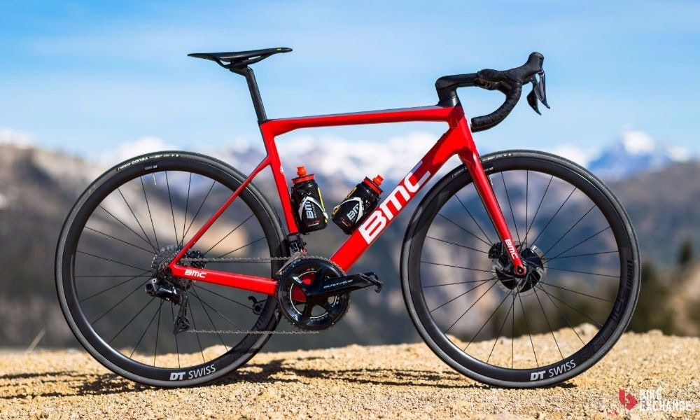
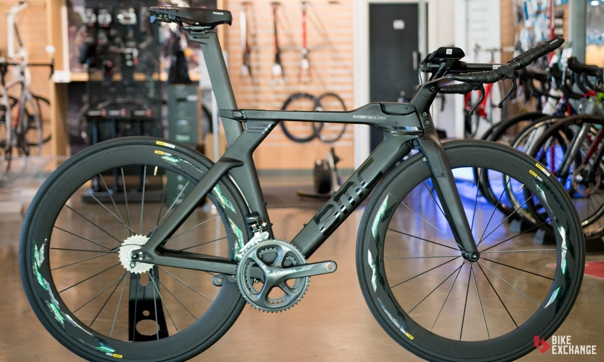
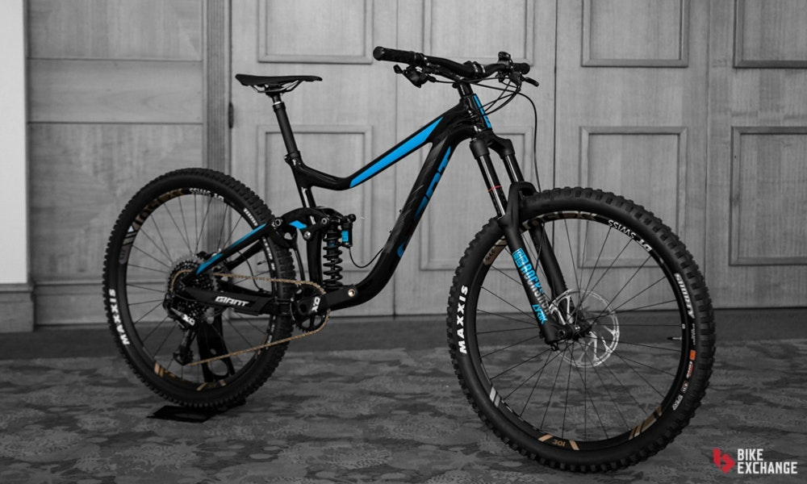
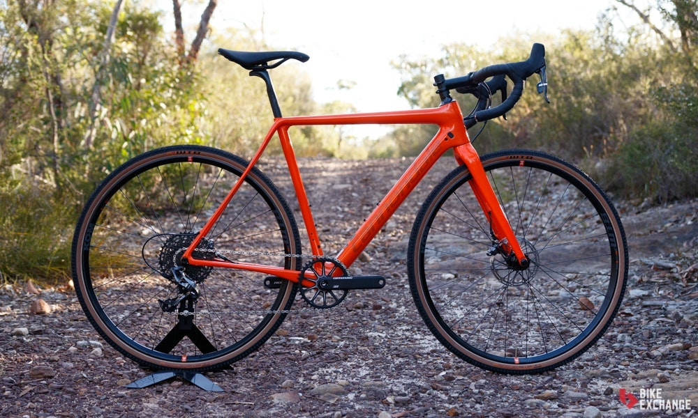
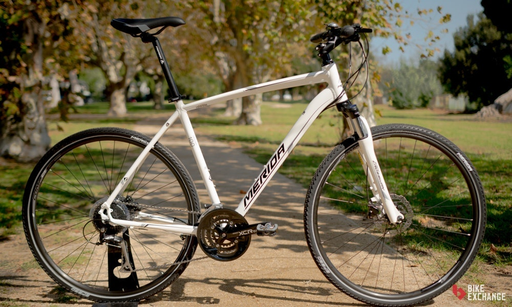
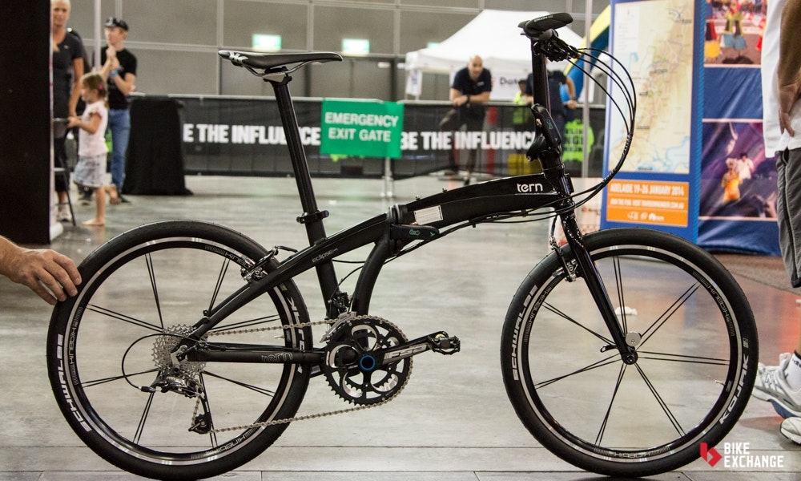

INICIO
Es un medio de transporte sano, ecológico, sostenible y económico, válido para trasladarse tanto por ciudad como por zonas rurales. Su uso está generalizado en la mayor parte de Europa, y llega a ser, en países como Suiza, Alemania, Países Bajos, Bélgica, algunas zonas de Polonia y los países escandinavos, uno de los principales medios de transporte. En Asia, especialmente en China y la India, es el principal medio de transporte. Las bicicletas fueron muy populares en la década de 1890 y, más tarde, en las de 1950 y 1970. Actualmente está experimentando un nuevo auge y su uso crece considerablemente en todo el mundo debido al alto precio del combustible, pues la bicicleta resulta muy ecológica y económica.
Y aunque en Colombia todavía somos temerosos para usar la bicicleta como medio de transporte, su capital, Bogotá, fue escogida recientemente por la fundación española Eroski Consumer como la octava mejor ciudad en el mundo para transportarse en estos vehículos de dos ruedas.
Bicicletas de Ruta

Están diseñadas para montar en carreteras y terrenos planos, las bicicletas de ruta se encuentran entre las más eficientes en el mundo del ciclismo, y puedes identificarlas por sus ruedas delgadas y su manubrio que se curvea hacia abajo y de vuelta hacia ti.tando un nuevo auge y su uso crece considerablemente en todo el mundo debido al alto precio del combustible, pues la bicicleta resulta muy ecológica y económica. Leer mas
Bicicletas de Triatlón y Contrarreloj

Las bicicletas de Triatlón/contrarreloj están diseñadas con las competencias más exigentes en mente, no te servirán mucho para motivos recreacionales. Se enfocan en la aerodinámica, lo cual las hace más rápidas que las bicicletas de ruta, si compites en línea recta, buscando batir un tiempo récord. Estas ventajas en la velocidad se ven balanceadas sacrificando tu control y comodidad después usos prolongados. Leer mas
Bicicletas de Ciclomontañismo o MTB

Podemos decir con seguridad que no hay una categoría del ciclismo con tantas opciones como las bicicletas de montaña/MTB. Esto puede ser bueno, pero fácilmente se vuelve confuso al estar bombardeado con tantas alternativas. Leer mas
Bicicletas de Cyclocross

Hechas para competir en el deporte con el que comparten nombre. Sus primeras competencias se realizaron en Europa, eran la manera en que los ciclistas de ruta se mantenían en forma durante el invierno, sin embargo, hoy en día esta modalidad se esparció por todo el mundo y tiene millones de fanáticos por mérito propio. Leer mas
Bicicletas Híbridas

Seguro las conoces como bicicletas de confort o "fitness", las híbridas normalmente ofrecen la posición de montar más erguida. Su nombre se debe a que nacieron como el balance entre las bicicletas de ruta y las de montaña, pero hoy en día se podrían describir mejor en la categoría de bicicletas recreacionales que se usan para mantenerse en forma. Leer mas
Bicicletas Urbanas

Esta categoría es difícil de describir, ya que cubre todo tipo de bicicletas que sean diseñadas para el ambiente urbano y el transporte del día a día. Comúnmente se crean con el transporte eficiente en mente, para distancias cortas o medianas. Leer mas
BBicicletas Plegables

Imagina una bicicleta que pueda ser almacenada en espacios reducidos, o transportarse sin líos en transportes públicos, como el nombre lo sugiere, las bicicletas plegables están hechas para colapsarse y ser fáciles de guardar y portar. Leer mas